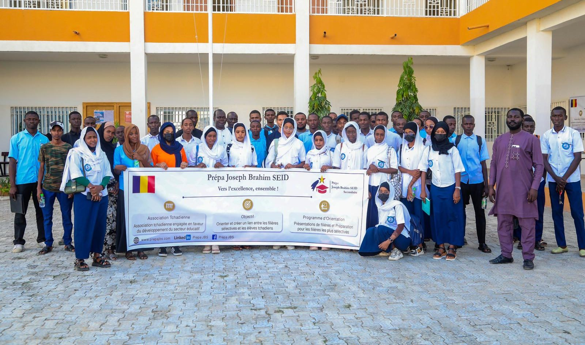

Vers l'excellence, ensemble.
Nous accompagnons les lycéens tchadiens dans leur orientation post-bac et préparons les plus ambitieux aux classes préparatoires et aux Grandes Écoles.

Le chemin que nous faisons avec eux
Du lycée aux filières les plus sélectives, un accompagnement en quatre temps.
S'informer
Filières, procédures d'admission, calendriers et débouchés.
S'outiller
Plateformes d'inscription, organisation, ressources en ligne.
Se préparer
Un cadre structuré et des défis pour viser plus haut.
Intégrer
Les filières d'excellence (Grandes Écoles, médecine, droit, etc.).
Explorer le site
L'association
Pourquoi nous existons et ce que nous voulons apporter pour l'orientation au Tchad.
Nos actions
Nos présentations de filières et audiences institutionnelles, en dates et en images.
Partenaires
Les lycées qui nous font confiance.
Nous soutenir
Bénévolat, dons, partenariats : aidez un lycéen tchadien à viser plus haut.